컴퓨터그래픽스운용기능사 (2006-04-02 기출문제)
1과목: 산업디자인 일반
1. 다음은 어느 나라의 디자인에 관한 설명인가?
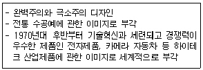
- 미국
- 일본
- 프랑스
- 독일
(정답률: 79%)

2. 설계도로 나타낼 수 없는 재료의 특성, 제품(공사)성능, 제조(시공)방법 등을 문장, 숫자로 표시한 것을 무엇이라고 하는가?
- 견적서
- 시방서
- 평면도
- 명세서
(정답률: 77%)
3. 유리그릇이 일용품으로 쓰이게 된 것은 기원전 20년경 창유리가 개발되면서부터이다. 이 창유리를 개발한 나라 사람은?
- 이집트인
- 그리스인
- 로마인
- 고딕인
(정답률: 65%)
4. 다음은 스케치 기법 중 가장 정밀하고, 전체 및 부분에 대한 비례의 정확성과 투시, 작도에 의한 외형의 변화과정이 적절한 색채처리에 의해서 구체화되는 스케치 기법은?
- 러프 스케치
- 썸네일 스케치
- 스타일 스케치
- 스크래치 스케치
(정답률: 67%)
5. C.I.P. 란 무엇의 약자인가?
- Company Institute Program
- Cooperation Institute Program
- corporate Identity Program
- Coordination Identity Program
(정답률: 75%)
6. 겉모양보다 성능 시험을 위하여 제작되는 것은?
- 제작 모델(prototype model)
- 실험 모델(pilot model)
- 연구 모델(study model)
- 제시 모델(presentation model)
(정답률: 80%)
7. POP 광고의 기능에 관한 설명으로 잘못된 것은?
- 판매점에 온 소비자에게 브랜드나 브랜드 네임을 알릴 수 있다.
- 신제품을 알리는데 좋으며 신제품의 기능, 가격을 강조 한다.
- 상품에 대한 자세한 설명은 충동구매를 방지한다.
- 점원의 설명보다 우수한 대변인이 될 수 있다.
(정답률: 82%)
8. 시각 디자인의 커뮤니케이션 기능별 분류 중 거리가 먼 것은?
- 지시적 기능
- 설득적 기능
- 상징적 기능
- 심미적 기능
(정답률: 50%)
9. 다음 중 포장 디자인의 기능과 가장 거리가 먼 것은?
- 보호와 보존성
- 편리성
- 상품성
- 작품성
(정답률: 86%)
10. 입체에 대한 설명 중 올바른 것은?
- 입체의 형은 보는 방향과 각도에 다른 공간에서의 외곽선으로 평면상의 윤곽선과 차이가 없다.
- 입체의 형은 면의 이동에서 생기고, 평면의 형은 선의 이동에서 생긴다.
- 입체는 면이 어떠한 각도를 가진 2차원 방향으로의 이동과 최전에 의해 만들어진다.
- 세잔은 자연에 존재하는 추상형을 깨닫고, 모든 형태들을 네 가지로 제안했다.
(정답률: 72%)
11. 다음의 소비자 유형 중 ‘상품의 상징성과 그 상품이 자신의 이미지나 위신을 얼마나 높여 줄 수 있는가’ 하는 일방적인 구매동기를 가지는 집단은?
- 관습적 소비자 집단
- 합리적 소비자 집단
- 가격에 민감한 소비자 집단
- 감정적 소비자 집단
(정답률: 70%)
12. 다음 중 디자인의 원리에 대한 설명 중 올바른 것은?
- 어느 한 부분이 다른 부분보다 드러나 보이게 함으로 보는 사람의 시선을 끌게 하는 것이 ‘대비’ 이다.
- 서로 이질적인 성격의 것을 대조시켜 극적인 표현효과를 얻는 것이 ‘변화’ 이다.
- 평형 상태를 느끼게 하는 것으로 힘의 조정이나 중력의 분배로 안정감을 주는 것이 ‘그라데이션’이다.
- 여러 요소들이 가진 다양성이 질적, 양적으로 자연스럽게 어울려 아름다운 상태를 만드는 것이 ‘조화’이다.
(정답률: 82%)
13. 형태심리학자들이 연구해 낸 형태에 관한 시각의 기본법칙에 대한 설명이 잘못 연결된 것은?
- 근접성 - 근접한 것끼리 짝지어진 것
- 유사성 - 유사한 요소들이 연관되어 보이는 것
- 연속성 - 유사한 배열이 하나의 묶음으로 되는 것
- 폐쇄성 - 시지각의 항상성을 의미하는 것
(정답률: 81%)
14. 매슬로우(Maslow)의 인간욕구 5단계 중 사회적 욕구에 대한 설명으로 바른 것은?
- 자존심, 지위, 명성, 권위
- 애정, 집단에서의 소속
- 질서, 보호
- 음식, 성, 생존
(정답률: 62%)
15. 디자인에 있어서 형태의 특성에 관한 설명이 잘못된 것은?
- 현실적 형태는 인간의 시각과 촉각으로 느낄 수 없는 형태이다.
- 이념적 형태는 순수 형태 또는 추상 형태이다.
- 점, 선, 면, 입체 등은 이념적 형태 이다.
- 현실적 형태는 자연 형태와 인위적 형태로 나뉜다.
(정답률: 79%)
16. 소비자 구매심리 과정인 AIDMA 법칙에 해당 되지 않는 것은?
- 주목(Attention)
- 흥미(interest)
- 욕망(desire)
- 판매행위(action)
(정답률: 89%)
17. 투시도법의 종류 중 최대의 입체감을 표현할 수 있으며, 주로 건물투시에 적합한 것은?
- 등축 투시도법
- 평행 투시도법
- 유각 투시도법
- 사각 투시도법
(정답률: 52%)
18. 실내 디자인에서 크기와 모양에 일관성을 부여하고 질서감과 안정감을 주는 원리는?
- 다양성
- 반복성
- 고급성
- 통일성
(정답률: 87%)
19. 디자인 매니지먼트로서 디자인 평가 기준요소 중 ‘차별성’에 대한 설명으로 올바른 것은?
- 최저의 예산과 노력으로 최대의 효과를 얻게 할 것
- 시각적 표현으로 심미, 질감, 좋은 비례, 아름다울 것
- 시대적인 센스와 소비자 욕구가 충족될 수 있을 것
- 경쟁회사의 디자인으로부터 소비자에게 혼돈을 일으키지 않게 명확히 구별될 것
(정답률: 80%)
20. 실내 디자인의 4단계 과정에 관한 설명이 맞는 것은?
- 기획 과정 - 실내 디자인 작업과 관련되어 디자인을 시정하거나 시공상의 문제점을 해결하는 단계이다.
- 설계 단계 - 기획 과정에서 수집한 정보를 활용하여 대상 공간에 가구를 배치하는 단계이다.
- 시공 과정 - 설계과정의 결과를 기초로 하여 실제 작업을 하는 단계이다.
- 사용 후 평가 과정 - 결과를 기초로 하여 관련되어 있는 모든 정보를 수집하는 관계이다.
(정답률: 74%)
2과목: 색채 및 도법
21. 다음에 제시한 색체계 중 종류가 다른 것은 무엇인가요?
- 먼셀 표색계
- NCS 표색계
- 오스트발트 표색계
- DIN 표색계
(정답률: 58%)
22. 다음 평면도법 중 ‘같은 면적’ 그리기가 아닌 것은?
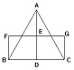
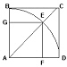
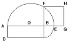
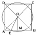
(정답률: 63%)
23. 어두워지면 가장 먼저 사라져서 보이지 않는 색은?
- 노랑
- 빨강
- 녹색
- 보라
(정답률: 82%)
24. 어두운 색 속의 작은 면적의 색은 상대적으로 더욱 밝게 보이고, 밝은 색 속의 작은 면적의 색은 더욱 어둡게 보이는 대비 현상은?
- 색상 대비
- 명도 대비
- 채도 대비
- 보색 대비
(정답률: 75%)
25. 다음 중에서 연변 대비를 감쇄시키고자 할 때 가장 적합한 방법은?
- 경계를 애매하게 한다.
- 보색관계를 유지한다.
- 채도차를 크게 한다.
- 색상차를 크게 한다.
(정답률: 71%)
26. 다음 그림과 같은 원의 투시도법은?
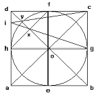
- 4 점법에 의한 도법
- 6 점법에 의한 도법
- 8 점법에 의한 도법
- 12 점법에 의한 도법
(정답률: 70%)
27. 유사 색조에 배색에서 받는 느낌은?
- 강함, 똑똑함, 생생함, 활기참
- 평화적임, 안정됨, 차분함
- 동적임, 화려함, 적극적임
- 예리함, 자극적임, 온화한
(정답률: 89%)
28. 투시도법을 연구하여 새로운 회화공간을 표현한 15세기 대표적인 작품은?
- 최후의 만찬
- 브란카치 예배당 벽화
- 비너스의 탄생
- 수테고지
(정답률: 74%)
29. 다음 중 투시도법으로 얻은 상이 작아서 그대로 사용할 수 없을 경우, 그것을 임의의 크기대로 확대하여 사용하는 도법에 해당하는 것은?
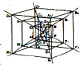
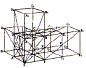
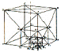
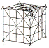
(정답률: 72%)
30. 채도를 낮추지 않고 어떤 중간색을 만들어 보자는 의도로 화면에 작은 색점을 많이 늘어놓아 사물을 묘사하려고 한 것에 속하는 것은?
- 가산 혼합
- 감산 혼합
- 병치 혼합
- 회전 혼합
(정답률: 82%)
31. 다음 중 도면의 용도에 의한 분류에 해당되는 것은?
- 계획도, 제작도
- 조립도, 부품도
- 부품도, 공정도
- 배치도, 상세도
(정답률: 61%)
32. 다음 중 깊이가 있게 하나의 화면에 그려지므로 원근법이라고도 하며, 광학적인 원리와 흡사하기에 사진 기하학이라고도 말하는 도법은?
- 투시도법
- 투상도법
- 기본도법
- 입체도법
(정답률: 68%)
33. 색채를 색의 삼속성에 따라 분류하여 표현한 색 이름은?
- 관용색명
- 고유색명
- 순수색명
- 계통색명
(정답률: 63%)
34. 다음 중 지각적으로 고른 감도의 오메가 공간(색 공간)을 통한 색채 조화론을 주장한 사람은?
- 문·스펜서
- 오스트발트
- 비렌
- 먼셀
(정답률: 73%)
35. 제도에 사용하는 한글의 선 굵기는 문자의 높이는 얼마로 하는 것이 적당한가?
- 1/2
- 1/5
- 1/9
- 1/12.5
(정답률: 58%)
36. 강하고 짧은 자극 후에도 계속 보이는 것으로, 어두운 곳에서 빨간 불꽃을 빙빙 돌리면 길고 선명한 빨간 원을 볼 수 있는데 이것은 어떤 현상이 계속해서 일어나기 때문인가?
- 부의 잔상
- 정의 잔상
- 보색효과
- 도지반전 효과
(정답률: 79%)
37. 진출, 후퇴색에 대한 일반적인 설명 중 틀린 것은?(보기 내용이 정확하지 않습니다. 정확한 보기 내용을 아시는분께서는 오류 신고를 통하여 작성 부탁 드립니다. 정답은 4번 입니다.)
- 자외선
- 가시광선
- 적외선
- 전파
(정답률: 78%)
38. 다음 중 입체의 투상에 해당하지 않는 것은?
- 각뿔의 투상
- 각기둥의 투상
- 정다면체의 투상
- 직선의 투상
(정답률: 83%)
39. 사진 암실의 빨강 안전광 아래에서는 흰색이나 노랑, 빨강이 잘 구별되지 않고, 빨강 잉크는 무색의 물처럼 보이는 현상은?
- 명암순응
- 색순응
- 항상성
- 빛의 감도
(정답률: 71%)
40. 똑같은 무게의 상품을 넣은 검정색과 연두색의 상자 중 운반 작업자가 연두색의 상자를 운반했을 때 피로도가 경감했다고 한다. 이것은 색채 감정 효과 중 무엇과 관련이 있는가?
- 온도감
- 중량감
- 경연감
- 강약감
(정답률: 80%)
3과목: 디자인 재료
41. 고체 재료를 유기재료와 무기재료로 나눌 때, 무기재료에 해당하는 것은?
- 피혁
- 유리
- 종이
- 플라스틱
(정답률: 72%)
42. 인쇄용지로 적합하지 않은 것은?
- 거칠지 않고 신축성이 좋아야 한다.
- 흡유성이 좋아야 한다.
- 종이의 앞, 뒷면의 차이가 없어야 한다.
- 표면이 평활하고 보푸라기가 약간 있어야 한다.
(정답률: 85%)
43. 다음 중 황동의 합금 원소로 옳은 것은?
- Ni+Cu
- Si+Ai
- Cu+Zn
- Cu+Sn
(정답률: 66%)
44. 동물성 접착제인 아교의 특성이 아닌 것은?
- 엷은 색으로 투명성과 탄성이 크다.
- 짐승의 가죽이나 뼈 등으로 만든다.
- 접착력이 좋고 늦게 굳으며, 내수성이 좋다.
- 주로 나무나 가구의 맞춤 접착제로 쓰인다.
(정답률: 61%)
45. 다음 종이의 제조 공정을 바르게 나열한 것은?
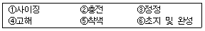
- ④-①-②-⑤-③-⑥
- ①-②-③-④-⑤-⑥
- ③-②-①-⑤-④-⑥
- ②-①-④-⑤-③-⑥
(정답률: 79%)
46. 가열하여 유동 상태로 된 플라스틱을 닫힌 상태의 금형에 고압으로 충전하여 이것을 냉각, 경화시킨 다음 금형을 열어 성형품을 얻는 방법은?
- 압축 성형
- 사출 성형
- 압출 성형
- 블로 성형
(정답률: 70%)
47. 다음 중 핫 스프레이 도장 작업시 주의 사항으로 맞는 것은?
- 스프레이 패턴을 비교적 많게 해준다.
- 가열 온도는 30~50℃정도까지 하고 가급적 온도를 높이도록 한다.
- 물체와의 스프레이 거리는 가깝게 하고, 조작 속도를 느리게 한다.
- 도료의 이송 압력은 높아야 원활하게 공급된다.
(정답률: 62%)
48. 다음 중 세밀한 부분까지도 정교하게 나타내고 싶거나 미세한 입자로 네거티브를 크게 확대하고자 할 때 유리한 필름은?
- 저감도
- 중감도
- 고감도
- 초고감도
(정답률: 67%)
4과목: 컴퓨터 그래픽스
49. 어떤 화상을 얼마나 세밀하게 표시할 수 있는지 그 정밀도를 나타내는 척도는?
- 리플렉트(reflect)
- 디더링(dithering)
- 하프톤(halftone)
- 레졸루션(resolution)
(정답률: 60%)
50. 평평한 표면에 울퉁불퉁 튀어나온 부분을 표현하는 매핑 기법은?
- 리플렉션 맵(reflection map)
- 프로젝션 맵(projection map)
- 투명 맵(transparency map)
- 범프 맵(bump map)
(정답률: 80%)
51. 단순한 모양에서 출발하여 점차 더 복잡한 형상으로 구축되는 기법으로 산, 구름 같은 자연물의 불규칙적인 움직임을 표현하는 모델링 기법은?
- 파라메트릭 모델(Parametric model)
- 프랙탈 모델(Fractal model)
- 서페이스 모델(Surface model)
- 와이어 프레임 모델(Wireram model)
(정답률: 74%)
52. 이미지의 외곽의 계단처럼 보이는 현상을 무엇이라고 하는가?
- 안티앨리어스 현상
- 그레이스케일 현상
- 앨리어스 현상
- 비트맵 현상
(정답률: 69%)
53. 은선 제거(Hidden Line Removed)란?
- 보이는 면만 그리고 모든 가려진 면은 제거한다.
- 보이는 면과 가려진 면 모두 그린다.
- 가려진 면만 그린다.
- 보이는 면, 가려진 면, 모두 제거한다.
(정답률: 83%)
54. 인터넷 홈쇼핑 사이트 디자인시 고려사항이 아닌 것은?
- 주 타켓 사용자들의 성향(Trend)과 선호도 분석
- 편리한 네비게이션(Navigation)과 빠른 선택을 도와주는 직관적인 인터페이스 디자인
- 관리상의 유지보수 및 업그레이드(Up-grade)
- 보안상의 여러 문제점이 고려된 폐쇄적인 구조 디자인
(정답률: 86%)
55. 제품, 건축, 도시환경 디자인시 사전에 디자인 결과를 예측하기 위해 컴퓨터 그래픽스를 활용하는 방법을 무엇이라고 하는가?
- 렌더링(Rendering)
- 과학적 시각화(scientific Visualization)
- 시물레이션(Simulation)
- 캐드 캠(CAD CAM)
(정답률: 73%)
56. 다음 중 일러스트레이터(Illustrator)에서 오브젝트를 복사하기 위한 방법이 아닌 것은?
- 오브젝트를 선택하여 Alf(option)키를 누른 채 드래그 한다.
- 다른 레이어로 복사할 때는 오브젝트를 선택하고 Alt(option)키를 누른 채 복사할 레이어 팔레트의 사각형 모양의 점(■)을 다른 레이어로 드래그한다.
- 오브젝트를 선택하고 단축키 Ctrl(command)+C, Ctrl(command) +V를 실행한다.
- 오브젝트를 선택하고 Object 메뉴에서 Transform Again을 실행한다.
(정답률: 73%)
57. 다음은 어떤 출력장치에 대한 설명인가?
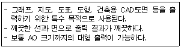
- 필름 레코더
- 잉크젯 프린터
- 열전사 프린터
- 플로터
(정답률: 73%)
58. 일반적으로 컴퓨터그래픽스 프로그램에서 볼 수 있는 색채체계가 아닌 것은?
- RGB
- DPI
- CMYK
- HSV
(정답률: 76%)
59. 다음 중 출력장치가 아닌 것은?
- 모니터
- 필름 레코더
- 플로터
- 디지타이징 타블렛
(정답률: 69%)
60. 아래의 내용이 설명하는 것은?
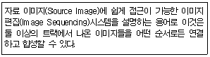
- 이미지 시퀀싱(Image Sequencing)
- 비선형 편집(Nonlinear Editing)
- 로토스코핑 편집(Rotoscoping Editing)
- 동화상 편집(Image Editing)
(정답률: 39%)